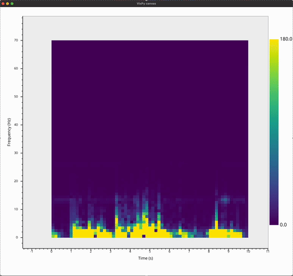
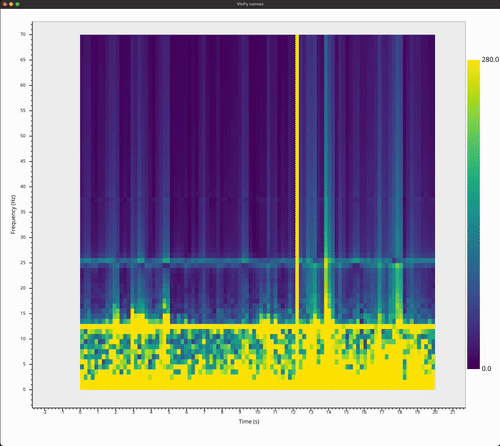
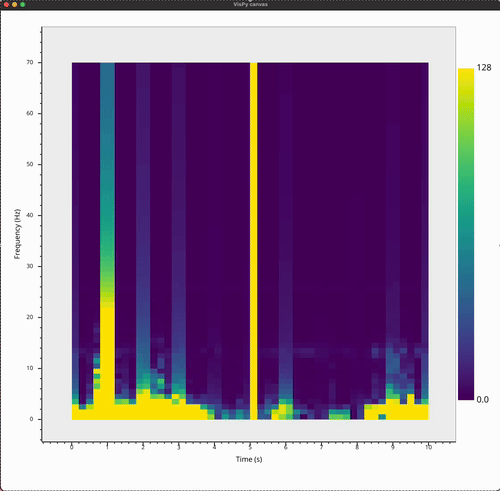
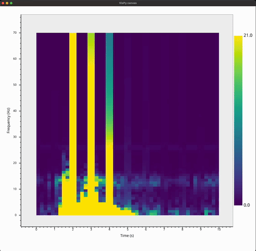
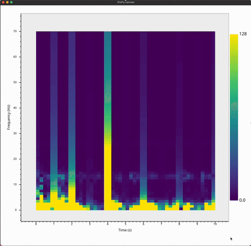

Real-time Spectrogram
Introduction
The spectrogram of a signal contains the magnitude of the frequencies of the signal over time. This means it contains three dimensions: time, frequency, and magnitude. This data can be plotted as an image that is essentially a heatmap of frequencies over time.
This example application shows how this can be achieved with real-time updates using the Mentalab Explore device, explorepy, and a few other dependencies.
Requirements
-
Mentalab Explore
-
A Python 3 installation.
We strongly recommend using Anaconda to install Python and using version 3.12.
Setting up the environment and dependencies
-
Set up an environment with Python version
3.12with conda and activate it:conda create -n spectrogram python=3.12 conda activate spectrogram -
Install
liblsl, which is required byexplorepy, via conda-forge:conda install -c conda-forge liblsl -
Install the other dependencies via
pip:pip install explorepy glfw vispy scipy numpy
glfw is used as a backend for vispy to display images. Alternatively, Qt, PySide6, and multiple other libraries equipped for drawing and displaying windows can be used.
Running the example
Adapting the script to your needs
The code for this example, real_time_spectrogram.py, can be found in the examples folder of the GitHub repository for explorepy:
You can run the script in the environment you have set up by calling python -m real_time_spectrogram and supplying command line arguments according to your needs:
| Argument | Description | Required | Default |
|---|---|---|---|
|
The name of your device, for example |
yes |
- |
|
The sampling rate to set the device to |
no |
|
|
The time between updates of the plot, in seconds |
no |
|
|
The total time window displayed in the plot, in seconds |
no |
|
|
Whether to connect via USB |
no |
|
|
The frequency to use for the notch filter |
no |
|
|
The frequencies to use for the bandpass filter |
no |
|
|
The mode used for drawing the plot. Options: |
no |
|
For example, to run the script with default values for the device Explore_ABCD:
python -m real_time_spectrogram -n Explore_ABCDAn example that uses every option:
python -m real_time_spectrogram -n Explore_ABCD -sr 500 -uw 0.5 -tw 20 -usb -fn 50.0 -fbp 3.0 30.0 -m overlappingThis call will:
-
Set the sampling rate to
500 Hz -
Set the update window to
0.5 s -
Set the time window to
20 s -
Tell the script to connect via USB
-
Add a Notch filter for the frequency
50 Hz -
Add a Bandpass filter with the low cutoff frequency
3.0 Hzand high cutoff frequency30.0 Hz -
Use the drawing mode
overlapping
In addition to the command line arguments, a configuration dictionary is defined in the code and can be adapted in if name == 'main'.
config = {"window": "hann", "nperseg": 128, "noverlap": 0}The values in this dictionary are passed to scipy’s stft method to fine-tune how the STFT, the Short-time Fourier Transform, is calculated.
The config can be set to None to use scipy’s default values for the STFT:
config = NoneThe plot will only show up after the buffer has been filled once. This means the window will only appear after update_window seconds for the modes moving_fft and moving_stft, or after time_window seconds for the mode overlapping.
Depending on the chosen parameters, the result of the STFT or joined-together results may lead to a stretched-out plot. For example, if the sampling rate is set to 1000 Hz, the drawing mode is moving_fft, the update window is 1 s, and the time window is 10 s, the plot will hold 10 pixels on the x-axis (10 / 1 = 10) but 500 on the y-axis (1000 / 2 = 500).
In order to mitigate this, the plot’s camera is manipulated in the script to make the plot appear square instead of stretched out:
self.plot.camera.aspect = self.img.shape[0] / self.time_windowCommenting out this line will show the original aspect ratio of the plot.
Additionally, a frequency cut-off for the y-axis can be supplied to the plot with f_cutoff:
rt_spectrogram = SpectrogramPlot(device_sr=dev_sr,
update_window=uw,
time_window=tw,
mode=args.drawing_mode[0],
colormap="viridis",
config=config,
f_cutoff=70)The default cut-off value, if nothing is supplied, is 70. This value determines how many rows of the image should be plotted.
Drawing modes
The logic for all drawing modes is the same. Either the STFT or the FFT, the Fast Fourier Transform, is calculated on a buffer containing channel values. The result is then used to update a NumPy array that is interpreted as an image and plotted.
overlapping
In this mode, the STFT is calculated for the entire time_window. The STFT is recalculated every update_window seconds on the last time_window seconds of data.
To do this, the first update_window * device_sr samples are dropped from the buffer every update. The result of the STFT is used to overwrite the entire NumPy array that makes up the plot.

Using the drawing mode overlapping.
moving_fft
In this mode, the FFT is calculated on the update_window. Afterwards, the buffer is cleared and fills up until update_window * device_sr values are inside before the FFT is recalculated.
Every result is treated as a column of pixels for the resulting plot and updates the column of values in the NumPy array to the right of the last updated column, building up the plot slice by slice. Additionally, a rudimentary swiping line is drawn to the right of the latest pixel column.
When the right edge of the plot is reached, it starts updating from the left edge again.

Using the drawing mode moving_fft.
moving_stft
This mode can be seen as a hybrid of the other two modes. It calculates the STFT on the update_window and updates multiple columns in the NumPy array with its result, updating the plot chunk by chunk.

Using the drawing mode moving_stft.
The exact number of values considered for the STFT and FFT is not exactly the number of values that have arrived in the given time window. Instead, the number of values is always slightly more in order to be a power of 2, because this is most efficient for the FFT.
Keyboard interactions
The cut-off value for the plot can be increased or decreased by pressing the up or down key on the keyboard. This value corresponds to the colour at the top of the colourmap to the right. Any values from the STFT or FFT that are higher than this value will be displayed with the same colour as values at the cut-off.

Lowering the cut-off value using the Down key while in moving_stft mode.
The colourmap for the plot can be changed in code and is set to viridis by default. All available colourmaps can be cycled through by pressing the C key. The colourmap maps values from the STFT or FFT to a colour.

Cycling through the available colour maps using the C key.
The drawing mode, maximum time window, update window, and sampling rate all influence the frequency and time resolution of the plot.
Higher frequency resolution is achieved with longer buffers. This can be achieved by increasing the time between updates for the modes moving_fft and moving_stft, because these modes calculate the STFT or FFT with update_window * device_sr samples.
For overlapping, this means increasing the time window, because the STFT is calculated every update_window seconds on time_window * device_sr samples.
This also means the frequency resolution can be improved with higher device sampling rates.
Higher temporal resolution is achieved with higher update rates. This can be achieved by reducing the time between calculations. For the modes moving_fft and moving_stft, this corresponds to decreasing the update_window. For the mode overlapping, this corresponds to decreasing the time_window.
Increasing the sampling rate of the device can thus improve the temporal resolution without sacrificing resolution in the frequency axis.
Mouse interactions
The example uses vispy’s plotting module to plot the spectrogram as an image. The plot uses a PanZoomCamera by default. As the name suggests, this allows the user to pan the plot using click-and-drag gestures and zoom the plot using the scroll wheel.